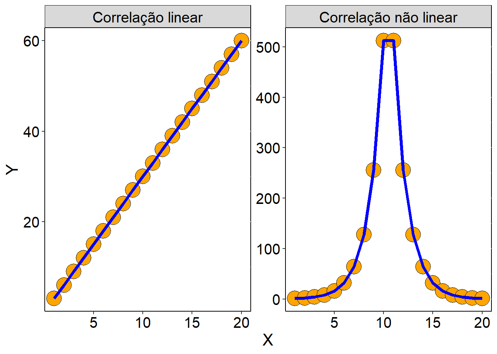
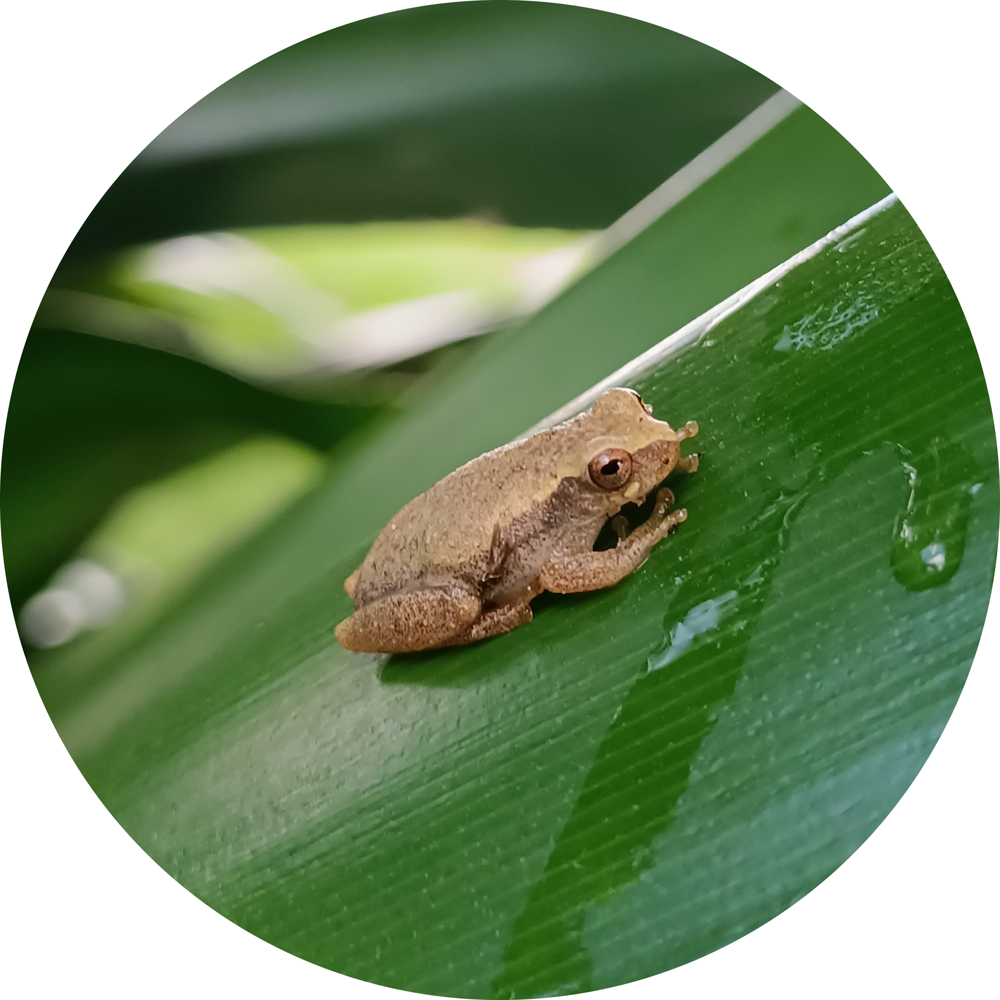
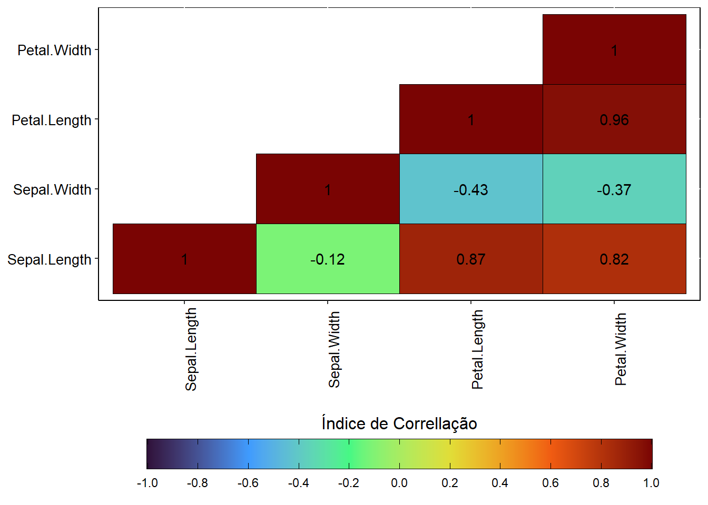
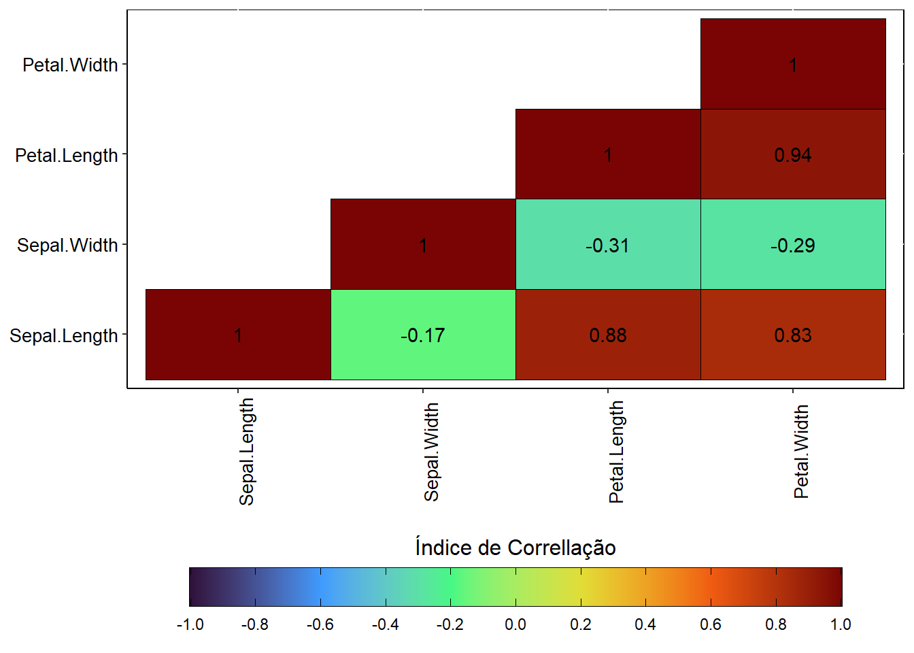

Uma análise sobre os principais métodos de escolha de variáveis de modelos, com aplicações em R.
A Ecologia é a ciência responsável por tentar entender como os organismos reagem com a interação com o seu ambiente, incluindo outros organismos. Por causa disso, a ecologia utiliza de forte uso de modelagens matemáticas e estatísticas para medir se as relações pesquisadas existem e o quanto elas são fortes. Então como a ecologia trabalha em modelar relações dos seres vivos com o mundo, é importante que seus modelos estejam bem ajustados, minimizando os erros associados. Uma das etapas mais importantes da criação de um modelo é a escolha das principais variáveis utilizadas no mesmo. Aí entramos em uma das maiores perguntas quando se fala de modelos: quais são as variáveis que eu devo utilizar no meu modelo?
O que são modelos?
A terceira década do século XXI (2021-2030) será marcada pelo uso de tecnologias que “pensam por si só”. Nesse época se fala muito dos modelos generativos de informação, como o famoso ChatGPT. E por mais que engenheiros de softwares voltados para Inteligências Artificiais e analistas de dados econômicos, com uma certa frequêncai, tentem reinvidicar que seus modelos são perfeitos, a realidade é que todos estão errados. Mas afinal, o que são modelos?
Modelos, no contexto matemático e estatístico, são tentativas de representar fenômenos do mundo real para números e algorítimos, que gerem resultados que possam ser interpretados como a expressão destes fenômenos. Mas a palavra chave é exatamente essa: tentativas. Acontece que nenhum modelo consegue ser o fenômeno modelado de fato, mas sim partes deles. Alguns mais parecidos, outros menos. Mas, no fim, nenhum representa de fato os fenômenos estudados. A diferença entre os resultados que um modelo encontrou para o fenômeno do mundo real que este tentou modelar é o que chamamos de erro. Logo, quanto menos distância existe entre os resultados de um modelo e o que aquele fenômeno no mundo real é, menos errado o modelo em questão é. Dentro da ecologia, um exemplo clássico disso são os modelos de crescimento populacional, que não são perfeitas, possuem erros, mas são extremamente úteis nas tomadas de decisão envolvendo conservação de biodiversidade e controle de epidemias.
Existem diferentes formas de avaliar os erros de um modelo. Algumas das principais formas empregadas na Ecologia são:
A forma mais simples, que é apenas olhar para o que o modelo gerou e comparar o quão diferente isto é do fenômeno estudado;
Com estatística descritiva, onde os erros podem ser medidos através de avaliações com medidas de tendência central, como a média (\(\bar{x}\), \(\mu\)), aliadas à medidas de dispersão, como o desvio padrão (\(s\), \(\sigma\));
Com estatística frequentista, através de testes de hipótese, os erros podem ser avaiados como a diferença entre a estatística calculada (testes T, Z, W, F, X2, etc.) e a estatística crítica;
Também relacionada à estatística frequentista, através de coeficientes, como o coeficiente de correlação (r) e o coeficiente de determinação (R2), e resultados sobre significância daqueles resultados ao acaso (valor de p);
Através de redução de dimensionalidade das variáveis, como na estatística multidimensional, a Análise de Componentes Principais (Principal Components Analysis - PCA), e a comparação dos autovalores das dimensões reduzidas;
Qualquer outra forma matemática, estatística e/ou teórico-conceitual que permita medir o grau de falha de um modelo em medir um fenômeno de forma perfeita.
Note
É importante destacar que a única coisa que reúne todas essas coisas, de diferentes tipos de modelos, interpretados como erros é o fato de que são os resultados de falhas na explição perfeita de um fenômeno do mundo real. Mas, de forma geral, diferentes tipos de modelos apresentam diferentes formas de expressar seus erros, então a forma de avaliar os erros de um modelo precisa ser adequada não apenas para as naturezas matemáticas do modelo avaliados, mas também para a teoria biológica por trás da medição daquele modelo. Um mesmo modelo pode estar mais errado ou menos errado, com os mesmos dados e sem alterar seus parâmetros, a depender da forma e das ferramentas com o qual este foi avaliado.
E no que exatamente isso afeta na escolha de variáveis para um modelo? Adicionalmente ao que foi citado no tópico 1 da lista anterior, a escolha de variáveis pouco relevantes para um modelo pode fazer com que seu erro aumente, já que estas não apresentam de fato importância real para o fenômeno estudado, por diferentes motivos. Desta forma, a escolha das melhores variáveis de um modelo também influencia no seu desempenho.
A seguir, veremos as principais formas utilizadas dentro da ecologia para a escolha de variáveis, abordando a teoria e a prática utilizando linguagem de programação R.
Importância ecológica e biológica
Antes de qualquer análise estatística, é importante que suas variáveis façam sentido ecológico e biológico.
Uma confusão relativamente frequente quando se trabalha com ciência de dados é coletar o máximo de váriáveis possíveis nos modelos e assumir que as que apresentaram os maiores desempenhos são os fatores com maior influências para o fenômeno estudado. O grande erro disso é que qualquer uma dessas análises só medem relações matemáticas, mas isso não significa que essas relaçõees de fato existem. Para exemplificar de forma mais clara esses efeitos, um site ótimo é o Spurious Correlations (Correlações Espúrias, em inglês): esse site mostra como coisas sem correlação alguma no mundo real podem apresentar correlações matemáticas dos seus dados, ou, como seu nome sugere, correlações espúrias.
Esses problemas se tornam mais graves quando lembramos que, em contextos ecológicos, variáveis ambientais (sejam bióticas ou abióticas) podem ou não ter influência, dependendo do objeto de estudo. A título de exemplo, Russildi et al. (2016), ao avaliarem os fatores que mais influenciavam a diversidade de anfíbios e répteis em florestas tropicais no México, encontraram que a diversidade de anfíbios e répteis são ambos influenciados por maiores precipitações, mas anfíbios sofreram mais influência de temperaturas menores e maior quantidade de corpos d’água próximos, enquanto que répteis sofreram maior influência das formas dos fragmentos e maiores temperaturas. Note que é o mesmo recorte geográfico e temporal, mas diferentes grupos sofreram influências de diferentes variáveis.
Por causa disso, o primeiro passo na construção de um modelo útil é conhecer a ecologia e a biologia do objeto estudado. Conhecer a biologia, a história natural, a ecofisiologia, interações bióticas e quaisquer informações ecológicas relevantes do seu objeto de estudo é fundamental para que seu modelo esteja menos errado, minimizando esforços e recursos desperdiçados com variáveis pouco interessantes para responder a pergunta de pesquisa em questão.
Multicolinearidade
A Multicolinearidade pode ser definida quando diferentes variáveis variam de foram semelhante, ou sejam: apresentam linearidades semelhantes. Nos estudos ecológicos, isso apresenta dois grandes problemas:
Na natureza, é extremamente comum que fatores ambientais apresentem correção, e então sofram de multicolinearidade. Um exemplo clássico disso é a temperatura e a umidade de um local: na maioria dos ecossistemas terrestres, sobretudo nos trópicos, é normal que áreas com maiores taxas de umidade apresentem menor temperatura, e vice-versa. Outro exemplo comum desses fenômenos em ecossistemas terrestres tropicais é a correlação entre diversidade de organismos saxicólas (organismos que vivem em serrapilheira) e o grau de abertura de dossel;
Diversos tipos de modelos utilizados para analisar fenômenos ecológicos partem da premissa de independência das unidades amostrais: cada ponto, local e repetição dos dados precisam ser informações novas, que os seus valores não dependam dos outros valores dos outros pontos, mesmo que estes apresentem valores semelhantes. Quando essa premissa não é obedecida, o modelo se torna inflado, e então este acaba gerando mais influência para uma tendência de dados não por ela, biologica, ecológica e matematicamente, fazer mais sentido, mas sim pelo fato desta informação se tornar repetida.
Devido a estes dois principais fatores, um parte importantes dos modelos ecológicos envolvem não apenas detectar, mas lidar com a multicolinearidade das variáveis.
Remoção de multicolinearidade
A técnica mais simples envolvendo lidar com multicolinearidade é a remoção de variáveis que apresentam correlação, selecionando, de forma manual e baseado na biologia e ecologia do objeto de estudo, as variáveis mais interessantes para responder a pergunta ecológica.
Matriz de correlação
Uma forma simples de detectar e medir a correlação entre variáveis de um modelo é através dos índices de correlação: índices matemáticos que calculam não apenas se duas ou mais variáveis variam de forma semelhante, mas o quanto essa correlção é forte.
Existem diferentes métodos para isso, mas os dois principais dentro de estudos ecológicos são os Índice de Pearson e Índice de Spearman: o Índice de Pearson mede correlações lineares, enquanto que o índice de Spearman mede correlações não lineares. Estes índices variam de -1 a 1, funcionando da seguinte forma:
r = 1: correlação diretamente proporcional perfeita.
r = 0: ausência de correlação;
r = -1: correlação inversamente proporcional perfeita.
Sobre a escolha entre os Índices de Pearson e Spearman
A escolhas entre os índices de Pearson e Spearman é uma discussão bastante antiga dentro da estatística, com diversos campos de estudo apontando motivos para escolher entre um e outro. Dentro da ecologia, quando se deseja identificar e medir multicolinearidade entre variáveis ambientais, a maioria dos pesquisadores empregam o Índice de Spearman, divido a relação entre diversas variáveis ambientais não ocorrer de forma linear. Contudo, é importante que a escolha entre esses índices sejam pensado para cada estudo como um caso em particular
Para o nosso exemplo, imagine a seguinte situação: você está estudando a relação entre a taxa de herbivoria que três espécies de flores do gênero Iris (I. setosa, I. versicolor, I. virginica) sofrem e a morfometria de suas pétalas e sápalas, tendo dados do comprimento e largura das pétalas e sépalas dos indivíduos das três espécies. Antes de criar um modelo você irá testar a multicolinearidade através de índices de correlação. Para esse exemplo, serão usados tanto o índice de Pearson quando de Spearman.
Para o código em R, usaremos o dataset iris, nativo do R, e os pacotes tidyverse, para o tratamento e a visualização de dados e reshape2, para a transformação da matriz de correlação.
Primeiro, vamos carregar nossos pacotes. Certifique-se que estão instalados antes de começar.
# Carregando os pacotes
library(tidyverse)── Attaching core tidyverse packages ──────────────────────── tidyverse 2.0.0 ──
✔ dplyr 1.1.2 ✔ readr 2.1.4
✔ forcats 1.0.0 ✔ stringr 1.5.0
✔ ggplot2 3.4.4 ✔ tibble 3.2.1
✔ lubridate 1.9.2 ✔ tidyr 1.3.0
✔ purrr 1.0.1
── Conflicts ────────────────────────────────────────── tidyverse_conflicts() ──
✖ dplyr::filter() masks stats::filter()
✖ dplyr::lag() masks stats::lag()
ℹ Use the conflicted package (<http://conflicted.r-lib.org/>) to force all conflicts to become errorslibrary(reshape2)
Attaching package: 'reshape2'
The following object is masked from 'package:tidyr':
smithsEm seguida, vamos carregar nossa base de dados, através da função data(), informando o nome da base de dados entre aspas, e então chamando-a.
# Carreando a base de dados
data("iris")
# Visualizando a base de dados
irisPara calcularmos a multicolinearidade, primeiro temos que selecionar apenas as variáveis numéricas, com as funções dplyr::select(), para selecionar colunas, e dplyr::where(), para informar que apenas serão selecionadas as variáveis numéricas (is.numeric), ambas do pacote dplyr, que faz parte dos pacotes carregados pelo tidyverse. Em seguida, utilizaremos a função nativa cor(), informando que será utilizado o índice de Pearson (method = "pearson"). Tudo isso atribuido (operador <-) ao objeto cor_pearson
Sobre a estrutura das funçãoes e o operador %>%
Note que as funções estão se operando uma após a outra, ao invés de todas estarem aninhadas umas dentros das outras. Isso significa que uma função está recendo os dados gerados pela função anterior. Isso é possível através do pipe (%>%), que é ativado quando o pacote tidyverse é ativado. Ele permite deixar o código mais legível e menos confuso.
# Correlação de Pearson
cor_pearson <- iris %>%
dplyr::select(dplyr::where(is.numeric)) %>% # selecionando apenas as variáveis com dados numéricos
cor(method = "pearson") # especificando que o índice é o de Pearson
## Matriz de correlação
cor_pearson Sepal.Length Sepal.Width Petal.Length Petal.Width
Sepal.Length 1.0000000 -0.1175698 0.8717538 0.8179411
Sepal.Width -0.1175698 1.0000000 -0.4284401 -0.3661259
Petal.Length 0.8717538 -0.4284401 1.0000000 0.9628654
Petal.Width 0.8179411 -0.3661259 0.9628654 1.0000000Note que a variável do comprimento da sépala (Sepal.Length) está altamente correlacionada com as variáveis de comprimento e largura das pétalas (Petal.Length e Petal.Width, respectivamente), devido seu alto valor de correlação (r > 0.7). Para ajudar na interpretação, podemos criar um gráfico para visualizar estas relações, através de ggplot.
## Gráfico
cor_pearson[upper.tri(cor_pearson)] <- NA # removendo a matriz triangular superior através de transforma-la em NA
cor_pearson %>%
reshape2::melt() %>% # ajustando a matriz para um formato de data frame
na.omit() %>% # removendo os NAs gerados
ggplot(aes(Var1, Var2, fill = value)) +
geom_tile(color = "black") +
geom_text(aes(label = value %>% round(2))) +
labs(fill = "Índice de Correllação") +
scale_fill_viridis_c(limits = c(-1, 1), option = "turbo", breaks = seq(-1, 1, 0.2)) +
guides(fill = guide_colorbar(title.position = "top",
title.hjust = 0.5,
barwidth = 25,
barheight = 1.5,
frame.colour = "black",
ticks.colour = "black")) +
theme(axis.text = ggplot2::element_text(color = "black", size = 10),
axis.text.x = ggplot2::element_text(color = "black", size = 10, angle = 90, vjust = 1),
axis.title = element_blank(),
strip.background = ggplot2::element_rect(color = "black"),
axis.line = ggplot2::element_line(color = "black"),
panel.background = ggplot2::element_rect(color = "black", fill = "white"),
legend.position = "bottom",
legend.title = element_text(color = "black", size = 12))
Vamos então repetir o mesmo processo, mas agora para Spearman.
# Correlação de Spearman
cor_spearman <- iris |>
dplyr::select(dplyr::where(is.numeric)) |> # selecionando apenas as variáveis com dados numéricos
cor(method = "spearman")
## Matriz de correlação
cor_spearman Sepal.Length Sepal.Width Petal.Length Petal.Width
Sepal.Length 1.0000000 -0.1667777 0.8818981 0.8342888
Sepal.Width -0.1667777 1.0000000 -0.3096351 -0.2890317
Petal.Length 0.8818981 -0.3096351 1.0000000 0.9376668
Petal.Width 0.8342888 -0.2890317 0.9376668 1.0000000## Gráfico
cor_spearman[upper.tri(cor_spearman)] <- NA
cor_spearman %>%
reshape2::melt() %>%
na.omit() %>%
ggplot(aes(Var1, Var2, fill = value)) +
geom_tile(color = "black") +
geom_text(aes(label = value %>% round(2))) +
labs(fill = "Índice de Correllação") +
scale_fill_viridis_c(limits = c(-1, 1), option = "turbo", breaks = seq(-1, 1, 0.2)) +
guides(fill = guide_colorbar(title.position = "top",
title.hjust = 0.5,
barwidth = 25,
barheight = 1.5,
frame.colour = "black",
ticks.colour = "black")) +
theme(axis.text = ggplot2::element_text(color = "black", size = 10),
axis.text.x = ggplot2::element_text(color = "black", size = 10, angle = 90, vjust = 1),
axis.title = element_blank(),
strip.background = ggplot2::element_rect(color = "black"),
axis.line = ggplot2::element_line(color = "black"),
panel.background = ggplot2::element_rect(color = "black", fill = "white"),
legend.position = "bottom",
legend.title = element_text(color = "black", size = 12))
Note que, tanto para Pearson quanto Spearman, a combinação sem multicolinearidade é o comprimento e largura da sépala, se seguirmos o nosso ponto de corte como r > |0.7|.
Sobre o uso do operador | |
Na matemática, usamos a expressão | | para informar que o número pode assumir tantos valores positivos quanto negativos. Ou seja r > |0.7| = r > 0.7 ou r < -0.7.
Também vale destacar que esse valor é arbitário, e qualquer outro valor, desde que faça sentido, poderia ser utilizado.
Fatores de Inflação da Variância (Variance Inflaction Factors - VIF)
Outra forma de detectar a multicolinearidade é através da criação prévia dos modelos, e então os ajustar. Isso pode ser uma vantagem, principalmente, porque, mesmo após a remoção de multicolinearidade através da remoção de variáveis correlacionadas, é possível que o modelo esteja inflado, devido à natureza matemática das variáveis. Por causa disso, uma alternativa é análise de Fatores de inflação da Variância (Variance Inflaction Factors - VIF).
o VIF é uma análise que avalia quantififando o quanto o erro padrão dos coeficientes estimados (\(\beta\) de uma regressão, por exemplo) se tornaram inflados, devido à multicolinearidade das variáveis do modelo. A vantagem deste método é que ele avalia o modelo pronto, e não apenas as suas variáveis, informando se o modelo precisa ou não que alguma variável seja removida.
Sobre o que são os coeficientes estimados
Em modelos que testam se uma ou mais variáveis influenciam o comportamento de um grupo de dados, como na regressão linear, coeficientes estimados são uma estimativa média do quanto a variação dos preditores de um modelo afetam a variação dos dados das variáveis respostas. Por exemplo, se criarmos um modelo para estimar o quanto a predação (incidência de predadores) afeta a frequência de cantos de anfíbios (Hz), e o coeficiente estimado for -15,5, isso significa que para cada aumento em 1 nos valores dos dados de predação, os valores dos dados de frequência de canto diminuem em 15,5.
Contudo, essa relação não ocorre de forma perfeita. No nosso exemplo, diferentes indivíduos de anfíbios, mesmo da mesma espécie, responderão de forma de diferente à predação, devido a fatores como tamanho do corpo, morfomoetria de membros e orgãos, ecofisioloigia, estado de nutrição e hidratação, genética e até personalidade individual. Por isso os coeficientes estimados são médias, não valores absolutos. Assim, algumas unidades amostrais serão mais afetadas e outras menos afetadas, alguns sendo afetadas para diminuir -16,7 e outras a diminuir -11,63. Por isso, é utilizado a estimativa do erro padrão, em conjunto com os coeficientes estimados (\(\mu \pm S \bar{x}\)), já que um erro padrão baixo significa que que os valores do quanto as unidades amostrais são afetadas orbitam muito próximos da média, o que significa, no nosso exemplo, que a relação de influência da predação sobre a frequência do canto dos anfíbios é constante e sofre poucas variância. No nosso exemplo, um coeficiente de determinação com erro padrão = \(15,5 \pm 0,89\) representa uma grande constância da influência da predação sobre a redução das frequências de canto dos anfíbios.
Todas as variáveis de um modelo possuem um valor de VIF associado, o que significa que as variáveis que serão removidas não são aquelas que apresentam um valor discriminante, mas sim que estão fora de um intervalo considerado “permitido”. Alguns autores sugerem que o limite seja de 10, então variáveis com VIF > 10 seriam removidas, enquanto outros autores, mais conservadores, recomendam que seja valores como 5, outro 3 e alguns até 2. Em estudos ecológicos, é comum que o valores de cortes estejam entre 3 e 4 (Zuur et al 2010, Dormann et al 2013)
Vamos continuar o nosso exemplo das flores do gênero Iris, mas agora vamos simular dados de herbivoria, e criar um modelo linear. Para isso, vamos criar mais uma variável da taxa de herbivoria, através da função dplyr::mutate(), do pacote dplyr, e da função sample(), que é nativa do R, atribuindo isso ao objeto iris_pred.
set.seed(3214) # controlando a leatoriedade, assim sempre será a mesma sequência aleatória de dados
iris_pred <- iris %>%
dplyr::mutate(Predação = sample(seq(0, 1, length.out = 10000000) %>% round(3), size = 150, replace = TRUE))
iris_predO próximo passo é criar um modelo. Usaremos a função nativa lm(), selecionando a variável Predação como variável resposta e as demais (.) como preditoras. Em seguidas, vamos aplicar a função nativa summary() para extrair as estatísticas do modelo.
modelo <- lm(Predação ~ ., data = iris_pred %>% dplyr::select(dplyr::where(is.numeric)))
modelo %>%
summary()
Call:
lm(formula = Predação ~ ., data = iris_pred %>% dplyr::select(dplyr::where(is.numeric)))
Residuals:
Min 1Q Median 3Q Max
-0.52639 -0.23185 -0.00145 0.22223 0.51027
Coefficients:
Estimate Std. Error t value Pr(>|t|)
(Intercept) 0.47101 0.25748 1.829 0.0694 .
Sepal.Length -0.04245 0.07246 -0.586 0.5589
Sepal.Width 0.07404 0.07503 0.987 0.3254
Petal.Length 0.06307 0.07146 0.883 0.3789
Petal.Width -0.18009 0.11873 -1.517 0.1315
---
Signif. codes: 0 '***' 0.001 '**' 0.01 '*' 0.05 '.' 0.1 ' ' 1
Residual standard error: 0.2754 on 145 degrees of freedom
Multiple R-squared: 0.07036, Adjusted R-squared: 0.04472
F-statistic: 2.744 on 4 and 145 DF, p-value: 0.03077O modelo se apresentou como significativo (F(6, 143) = 2,188, p = 0,047), mas com um poder de explicação baixo, explicando apenas 4% da variação (R2 = 0,04). Uma coisa interessante desse modelo foi que nenhuma das variáveis preditoras foram significativas (coeficientes estimados baixos, estatísticas t baixas e p > 0,05). Esse efeito ocorre quando o modelo sofre de multicolinearidade. Pelos índices de correlação previamente feitos, sabemos que esse conjunto de dados apresentam multicolinearidade. Vamos então testar se o VIF apresenta as mesmas variáveis a serem removidas, utilizamos a função car::vif(), do pacote car, utilizando nosso modelo como os dados que entrarão na função. Vamos utilizar o ponto de corte como 5 para o VIF.
library(car)Carregando pacotes exigidos: carData
Attaching package: 'car'The following object is masked from 'package:dplyr':
recodeThe following object is masked from 'package:purrr':
somemodelo %>% car::vif()Sepal.Length Sepal.Width Petal.Length Petal.Width
7.072722 2.100872 31.261498 16.090175 Assim como nos índices de correlação, as variáveis que mais inflaram o modelo foram as relacionadas às pétalas (VIFPetal.Length = 31,26; VIFPetal.Width = 16,09). O comprimento da sépala (Sepal.Length) apresentou um valor de VIF maior que o ponto de corte estabelecido (VIFSepal.Length = 7,07). Contudo, ela está mais próxima do ponto de corte que as variáveis de comprimento e largura da pétala. Então vamos remover apenas as variáveis sobre pétalas, e ver se a multicolinearidade some por completo. Vamos criar outro modelo, apenas com dados sobre sépalas.
modelo2 <- lm(Predação ~ Sepal.Length + Sepal.Width, data = iris_pred)
modelo2 %>%
summary()
Call:
lm(formula = Predação ~ Sepal.Length + Sepal.Width, data = iris_pred)
Residuals:
Min 1Q Median 3Q Max
-0.53020 -0.21721 -0.03024 0.21384 0.56069
Coefficients:
Estimate Std. Error t value Pr(>|t|)
(Intercept) 0.59334 0.24091 2.463 0.0149 *
Sepal.Length -0.06072 0.02754 -2.205 0.0290 *
Sepal.Width 0.07582 0.05232 1.449 0.1494
---
Signif. codes: 0 '***' 0.001 '**' 0.01 '*' 0.05 '.' 0.1 ' ' 1
Residual standard error: 0.2764 on 147 degrees of freedom
Multiple R-squared: 0.05052, Adjusted R-squared: 0.0376
F-statistic: 3.911 on 2 and 147 DF, p-value: 0.02214Note que agora o modelo está mais ajustado (F(2, 147) = 3,911, p = 0,022), apesar de explicar menos agora (R2 = 0,037). Contudo, note também que agora uma das variáveis, o comprimento da sépala, se tornou significativa para o modelo (t = -2,20, p = 0,029), apesar do coeficiente estimado baixo (-0,06 \(\pm\) 0,027). Vamos testar se a multicolinearidade sumiu com completo.
car::vif(modelo2)Sepal.Length Sepal.Width
1.014016 1.014016 Agora sim a multicolinearidade sumiu por completo. Ambas as variáveis não apenas estão dentro do ponto de corte estabelecido, como apresentam os mesmos valores (VIFSepal.Length, Sepal.Width = 1,01).
Um ponto importante sobre o VIF, é que o valores das variáveis do modelo não mudam, não importa qual seja a variável resposta, desde que sejam os mesmos valores das variáveis preditoras. Por causa disso, é possível calcular o VIF sejam criar modelos, apenas utilizando suas variáveis. Utilizando novamente uma função chamada usdm::vif(), mas agora do pacote usdm, é possível calcular o VIF apenas com os dados das variáveis.
library(usdm)Carregando pacotes exigidos: terraterra 1.7.71
Attaching package: 'terra'The following object is masked from 'package:tidyr':
extract
Attaching package: 'usdm'The following object is masked from 'package:car':
vifiris %>%
dplyr::select(dplyr::where(is.numeric)) %>%
usdm::vif()
Sobre a escolha entre as funções car::vif() e usdm::vif()
Por mais que sim mais simples utilizar a função usdm::vif(), ainda é recomendado utilizar a função car::vif(), principalmente quando se quer avaliar os efeitos da multicolinearidade nas estatísticas dos modelos.
Um cuidado muito importante na escolha entre índices de correlação e VIF é que o VIF gera apenas relações matemáticas de inflação de modelo, mas ele pode apontar que uma variável menos interessante, do ponto de vista biológico e ecológico, deveria ser removida, enquanto uma vaariável menos interessante deveria permanecer, enquanto que nos índices de correlação ainda é possível fazer esta análise de escolha. Por isso, o VIF é recomendo em duas principais situações, sendo a segunda a mais importante:
Conjunto muito grandes de variáveis, onde escolher, de forma manual, pode ser muito trabalhoso, e dificil de analisar multiplas combinações;
Principalmente em conjunto de variáveis que possuem a mesma importância biológica e ecológica para tentar explicar o fenômeno estudado, ou importâncias muito semelhantes, onde a remoção de qualquer variável não afetará o poder de explicação biológica e ecológica do modelo.